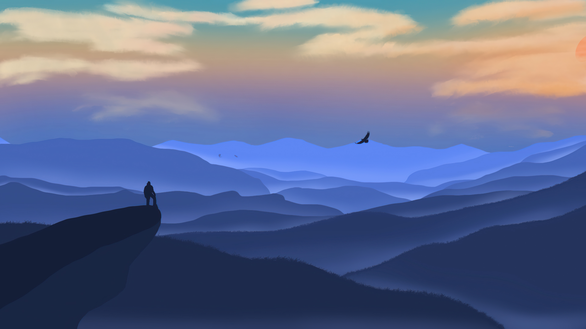

Для медитации
Вариация Медитаций
Медитация - это практика, способствующая умиротворению и сосредоточенности, и она не ограничивается лишь одним методом. Существует несколько подходов к медитации, каждый из которых обладает своими уникальными особенностями и возможностями. Визуальная, звуковая и игровая медитации предоставляют различные способы вовлечения и гармонизации сознания.
Визуальная Медитация: Подарок для Визуальных Любителей
Визуальная медитация предлагает визуальные стимулы - это могут быть красочные картинки, геометрические узоры или природные пейзажи. Она обычно направлена на улучшение визуального восприятия и способствует сосредоточенности внимания через визуальные объекты.
Звуковая Медитация: Гармония для Слухового Восприятия
Звуковая медитация включает звуковые пейзажи, музыкальные композиции, звуки природы или даже звуковые ритмы. Этот метод медитации основан на использовании звуков для умиротворения ума, создания атмосферы спокойствия и гармонии.
Игровая Медитация: Путь к Отдыху через Игру
Игровая медитация включает в себя использование интерактивных игр или приложений, специально разработанных для снятия стресса и достижения внутренней гармонии. Она позволяет наслаждаться процессом игры, при этом достигая состояния умиротворения и покоя.
Как выбрать подходящий метод?
Выбор метода медитации - это индивидуальный процесс. Визуальная медитация может быть привлекательна для тех, кто наслаждается визуальными образами и изображениями. Звуковая медитация может быть полезна для тех, кто находит умиротворение в звуках и мелодиях. Игровая медитация, в свою очередь, может быть идеальным способом для тех, кто хочет расслабиться и в то же время насладиться процессом игры.
Попробуйте сами!
Каждый метод уникален и может обладать способностью принести благополучие и пользу вашему уму и телу, а на данном сайте вы можете попробовать вышеперечисленные методы прямо сейчас!